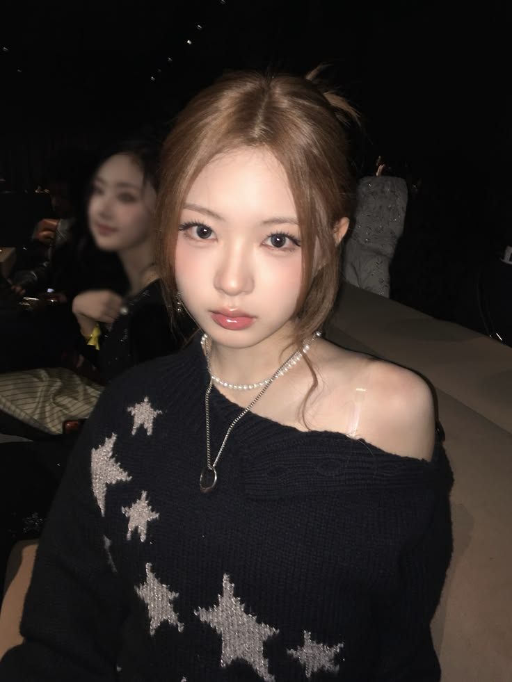

💌
A LITTLE MESSAGE
Hari ini mama punya satu pencapaian kecil yang ternyata nggak sekecil itu.
SELAMAT SUDAH BERHASIL 1 MINGGU TANPA CHAT MANTAN!
Tujuh hari bukan waktu yang sebentar, apalagi untuk seseorang yang dulu selalu jadi bagian dari keseharian mama.
Terima kasih sudah berusaha menahan diri, belajar membiasakan hari tanpa menunggu pesan dari seseorang, dan perlahan memilih untuk fokus sama diri sendiri.
Mungkin sesekali mama masih teringat, mungkin kadang masih penasaran sama kesehariannya, tapi lihat deh, ternyata mama bisa melewati hari-hari itu tanpa harus kembali ke percakapan yang sama.
Ini bukan tentang siapa yang lebih dulu melupakan, bukan juga tentang siapa yang menang atau kalah.
Ini tentang mama yang mulai belajar bahwa hidup mama tetap berjalan, bahkan tanpa kehadiran seseorang yang dulu terasa begitu penting.

mama cantikku
One week down, more peaceful days to go.
Sekali lagi, selamat atas pencapaian kecil yang luar biasa ini. Proud of you! ♡
Semoga minggu depan bukan cuma berhasil nggak nge-chat, tapi juga berhasil nggak kepo lagi kehidupannya.
Jangan lupa bahagia, ya.
mama pantas mendapatkan banyak
hal indah dalam hidup mama.
୨ৎ